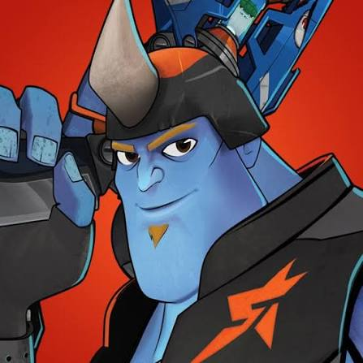
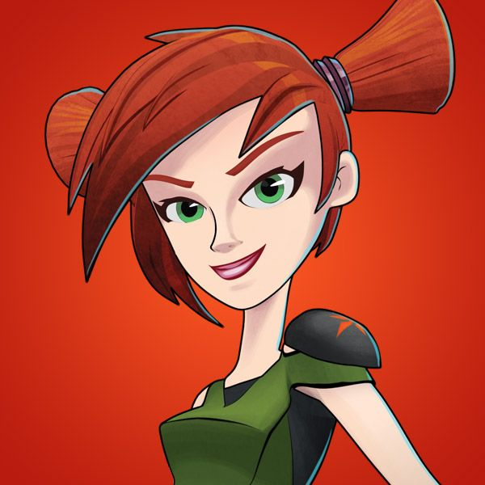
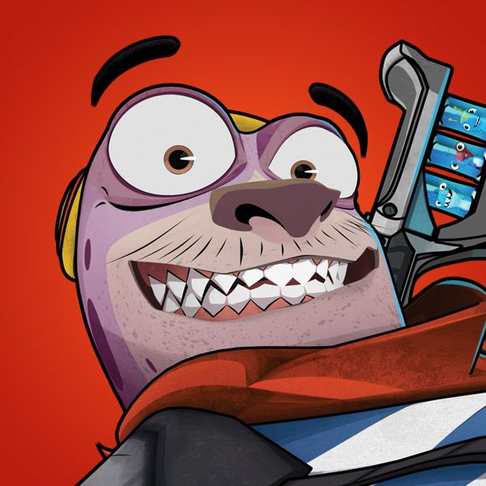

Eli

Kord

Trixie

Pronto
Eli
Eli Shane es el protagonista de Bajoterra. Llegó desde la superficie y, cuando su padre, Will Shane, desaparece, se convierte en el nuevo protector de Bajoterra. Es un lanzador de babosas valiente y decidido que lidera a la Banda de Shane, el grupo de amigos con el que se enfrenta al Dr. Blakk para proteger el mundo subterráneo.
Kord
Kord Zane es un trol de las cavernas, enorme y muy fuerte, que forma parte de la Banda de Shane. Es el mecánico del equipo: arregla los mechas y mejora los blásters de sus amigos. Le encanta hacer bromas pesadas, sobre todo a Pronto, pero detrás de su aspecto rudo tiene un gran corazón.

Trixie
Trixie Sting es la experta en babosas de la Banda de Shane. Es una chica valiente e inteligente que graba videos de sus aventuras, y su gran sueño es hacer un documental para demostrarle a todo Bajoterra que las babosas tienen sentimientos y una sociedad propia.

Pronto
Pronto es un topoide, una criatura parecida a un topo con rasgos humanos, y fue el primer miembro de la Banda de Shane. No tiene el liderazgo de Eli, la fuerza de Kord ni la inteligencia de Trixie, pero es un gran rastreador y un excelente excavador, siempre listo para guiar al equipo bajo tierra.